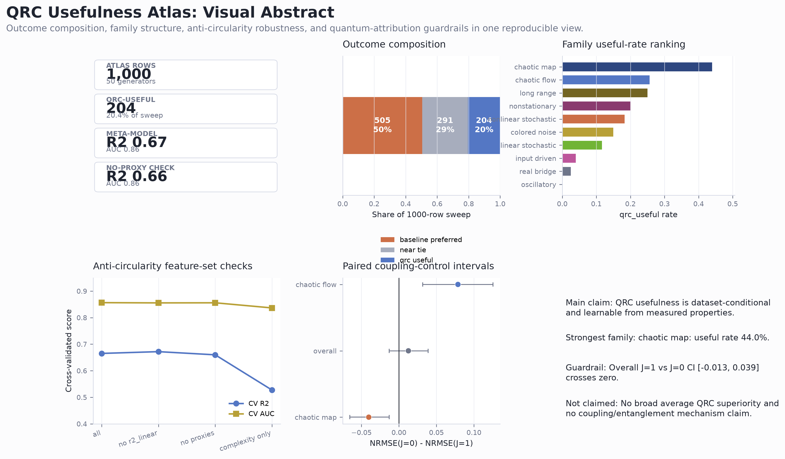
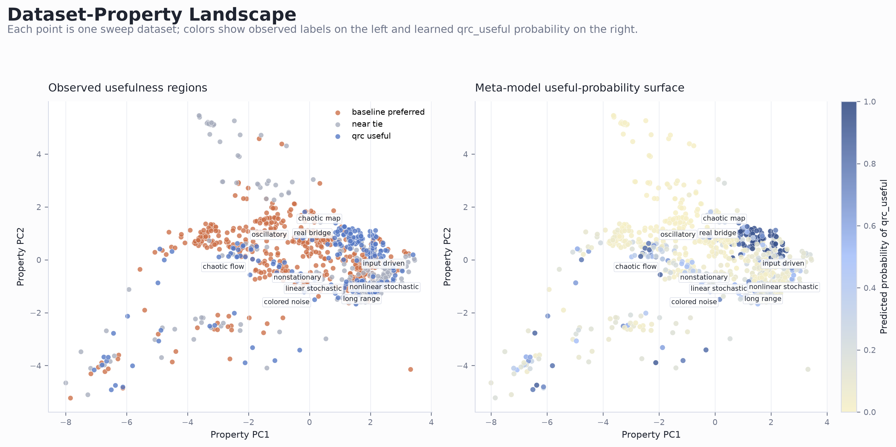
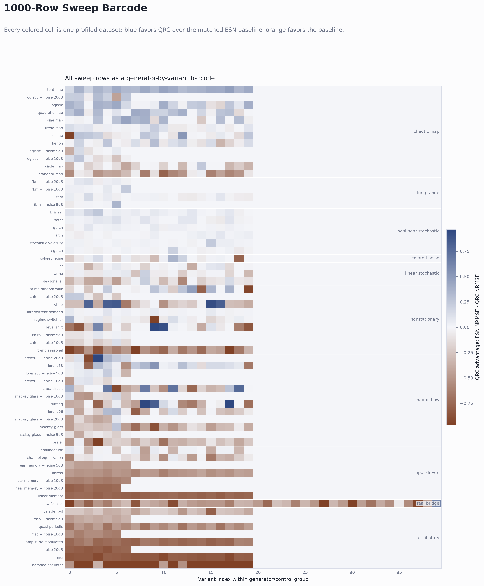
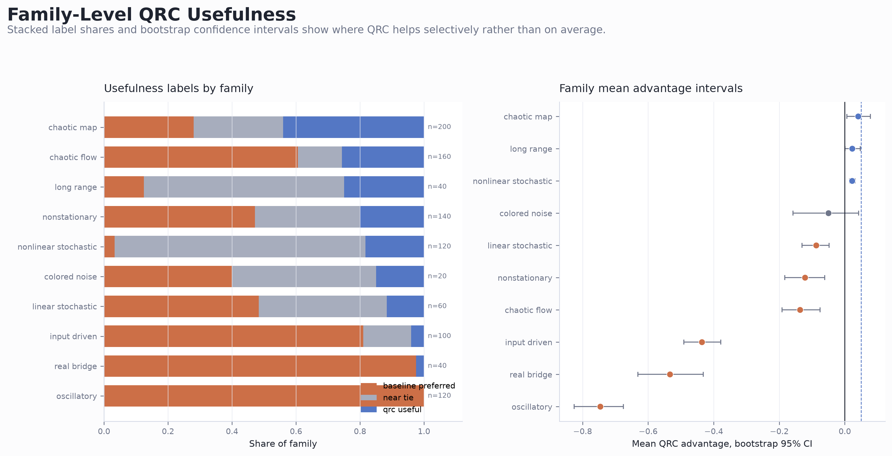
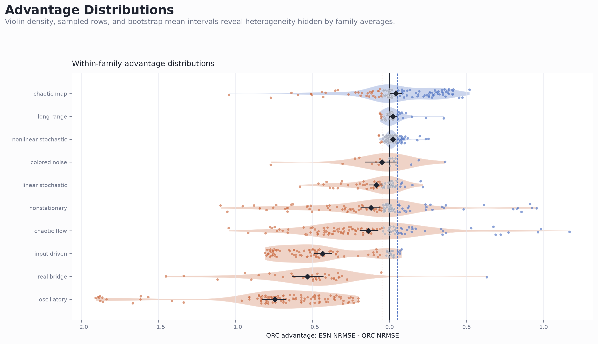
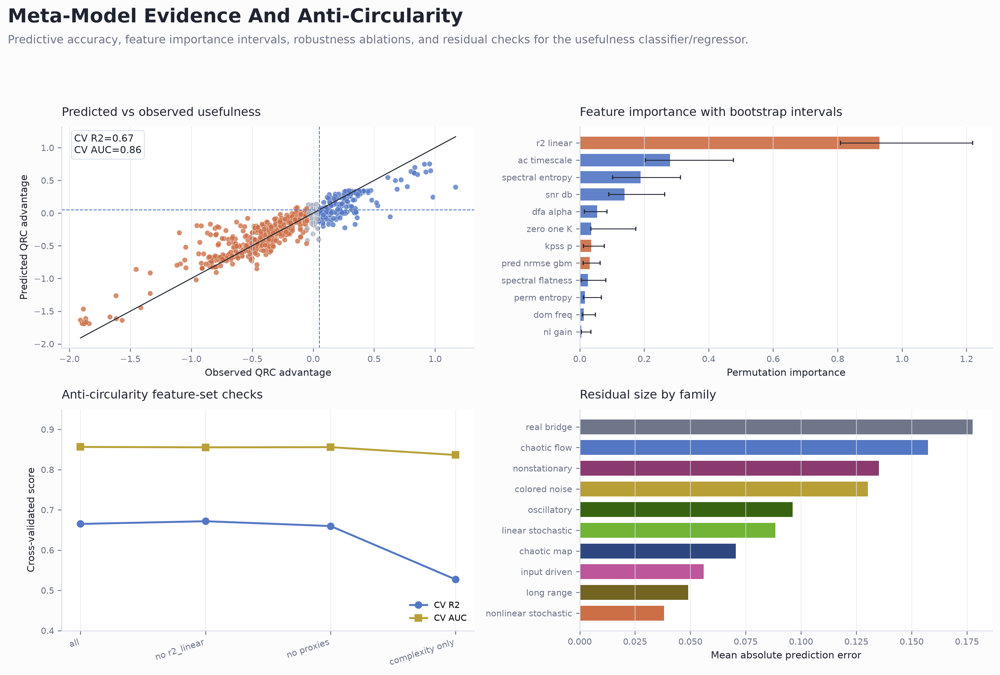
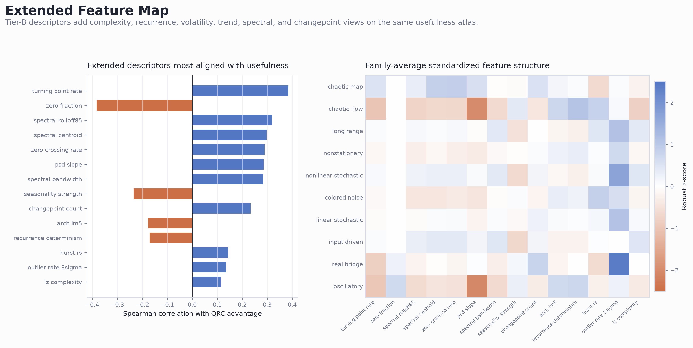
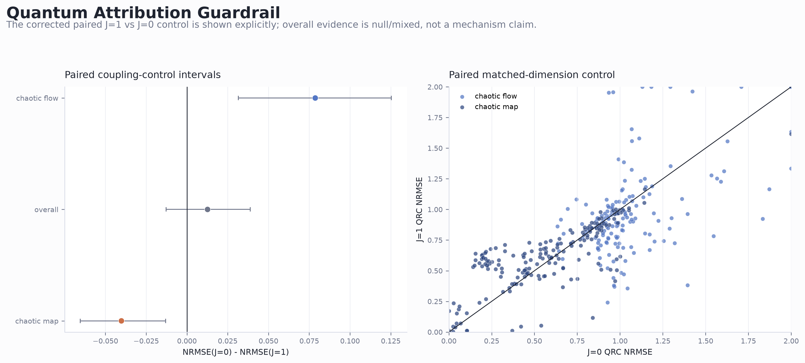
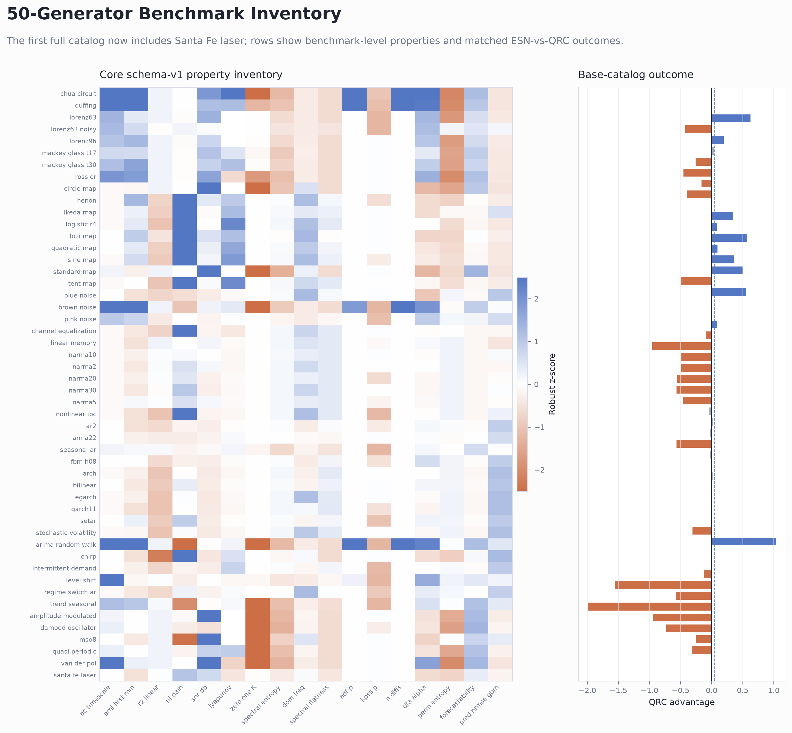
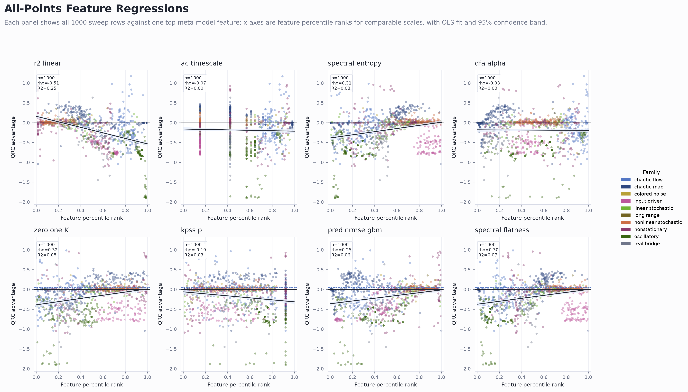

Claim boundary: this suite supports dataset categorization and meta-model analysis. It does not claim broad average QRC superiority or a quantum coupling/entanglement mechanism.
00 Visual Abstract
Executive visual summary of the full QRC usefulness atlas.

{kind=link}
01 Property Landscape
Two-panel property map of observed and predicted QRC usefulness.

{kind=link}
02 Sweep Barcode
Full sweep barcode by generator/control group and parameter variant.

{kind=link}
03 Family Outcomes
Family outcome shares and advantage confidence intervals.

{kind=link}
04 Advantage Distributions
Within-family QRC advantage distributions with bootstrap mean intervals.

{kind=link}
05 Meta Model Evidence
Meta-model prediction, importance, robustness, and residual diagnostics.

{kind=link}
06 Extended Feature Map
Extended feature correlations and family-level feature heatmap.

{kind=link}
07 Quantum Attribution Guardrail
Paired J=1 versus J=0 control intervals and scatter.

{kind=link}
08 Full Catalog Inventory
Full 50-row benchmark inventory with core properties and QRC advantage.

{kind=link}
09 All Points Feature Regressions
All finite sweep rows plotted against top features with regression lines and confidence bands.

{kind=link}